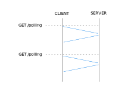
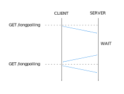
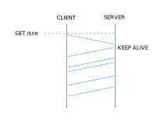
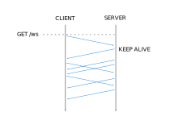

Web
Strict mode
Proxy objects
## <i class="fas fa-tasks"></i> Overview of Today's Class - Strict mode vs Sloppy mode - Proxy objects
Strict and Sloppy Mode
## <i class="fab fa-js"></i> JavaScript Object Notation (JSON) JSON is - a *string formatting* standard for structured data, - *based* on the Javascript object syntax Used for data serialization (only handles objects, arrays, string, number, boolean, null), usually for further transmittion or storage. ```json { "firstname": "John", "lastname": "Doe", "age": 28, "interests": ["ski", "bike"] } ``` - Extension: `.json`, - MIME type: `application/json` https://developer.mozilla.org/en-US/docs/Learn/JavaScript/Objects/JSON Notes: Note that JSON is a standard for how to format *strings*. Note also that it is different from Javascript Objects. The syntax of JSON is *inspired* from the syntax of Javascript Objects, but it is not the same. Also, JSON does not support functions, dates, or undefined.
## <i class="fab fa-js"></i> Object to JSON (stringify) The `JSON` global object offers conversion functions. `JSON.stringify` converts a Javascript object to a JSON string: ```js // A JavaScript Object var person = { firstname: "John", lastname: "Doe", age: 28, interests: ["ski", "bike"], get_age: function() { return this.age; } }; // And its JSON representation console.log(JSON.stringify(person)); ``` Note that functions and the prototype are *not* serialized. Stringifying an instance of a `Person` class will thus loose that information. <span class="detail">https://developer.mozilla.org/en-US/docs/Web/JavaScript/Reference/Global_Objects/JSON</span>
## <i class="fab fa-js"></i> JSON to Object (Parse) `JSON.parse` converts a JSON string to a Javascript object: ```js // A JSON object var person = '{"firstname":"John","lastname":"Doe","age":28,"interests":["ski","bike"]}'; // And its Javascript representation console.log(JSON.parse(person)); ``` <span class="detail">https://developer.mozilla.org/en-US/docs/Web/JavaScript/Reference/Global_Objects/JSON</span>
## <i class="fab fa-js"></i> JSON is NOT JavaScript! Why does the following snippet results in a SyntaxError? ```js // A JSON Object? var person = '{firstname:"John",lastname:"Doe",age:28,interests:["ski","bike"]}'; // Uncaught SyntaxError: Unexpected token f in JSON at position 1 console.log(JSON.parse(person)); ``` Why is the following snippet considered harmful? ```js // DON'T DO THIS!!! eval('var person = {firstname:"John",lastname:"Doe",age:28,interests:["ski","bike"]}'); ``` https://developer.mozilla.org/en-US/docs/Web/JavaScript/Reference/Global_Objects/JSON Notes: The main difference between the syntax of JS and JSON is that JSON requires double quotes around property names and string values, while JS objects do not. A more subtle difference is that JSON does not allow trailing commas, while JS objects do. In the second example, we are effectively using the Javascript execution engine to parse an object, instead of the JSON parser. The JS execution engine is Turing complete, and can be made to execute anything, while the JSON parser is very limited, to only parse JSON.
Network Programming
## <i class="fab fa-js"></i> HTTP Recall that the Hypertext Transfer Protocol (HTTP) is a request/response protocol. **HTTP/1.0** had a **short-lived** connection model and allowed **persistent connection** with the `Connection: keep-alive` HTTP header. **HTTP/1.1**, the version of HTTP commonly used by Web browsers, introduced: - **Persistent connections** that allow to reuse a TCP connection to send and receive multiple requests and responses (modern browsers **enable** this by default); - **Pipelined connections** that allow to send multiple requests without waiting for the corresponding responses (modern browsers **do not enable** this by default); - **Chunked transfers** that allow to divide the data stream into a series of chunks that are received independently of each other; - **Protocol upgrades** that allow a client to ask the server for a change in the application protocol. https://www.ietf.org/rfc/rfc2616.txt
## <i class="fab fa-js"></i> HTTP Connection management <img src="images/http_connection_management.png" style="width:70%; margin-top: 30px" /> <span class="detail">https://en.wikipedia.org/wiki/HTTP_persistent_connection</span>
## <i class="fas fa-hand-paper"></i> Implementing a Chat Application Clone the `example-chat` repository in the `web-classroom` organization. The following slides will be illustrated with these examples.
## <i class="fab fa-js"></i> Polling - The browser **polls** the events at a fixed interval - The server returns an empty result if there are no new events and immediatly closes the connection - The function `setInterval` is typically used set the interval - **Limitation:** the interval introduces a delay 
## <i class="fab fa-js"></i> Long-Polling - The browser **polls** events - The server keeps the connection open, returns events as soon as they are available, and closes the connection when the client sends a new request - When receiving events the browser can immediately send a new request - **Limitation:** this method requires to perform several requests 
## <i class="fab fa-js"></i> Server-side Events (SSE) - The browser **listen** to events and keeps the connection open - The server returns events as they become available and keeps the connection open - The browser provides the **EventSource API** that manages reconnections - **Limitation:** this method allows to receive events but not to send them  https://developer.mozilla.org/en-US/docs/Web/API/Server-sent_events/Using_server-sent_events
## <i class="fab fa-js"></i> Websocket - The browser open a connection and `Upgrade` the protocol to websocket - Once the websocket connection is open the browser and the server are allowed to send events - The browser provides the **WebSocket API** that manages protocol upgrade - **Limitation:** this method requires a protocol upgrade  https://developer.mozilla.org/en-US/docs/Web/API/WebSocket#Examples Notes: WebSocket is a protocol that exists at the same layer as HTTP, but is a distinct protocol, hence the need to declare the url with `ws://`. There is also a secure equivalent of websocket, similarly to HTTPS for HTTP: WSS, for which the url begins with `wss://`.